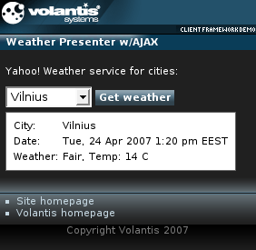

The Web Service Client widget allows to import XML data from an external source, transform it into format acceptable by the XDIME application and load the results on a device via AJAX.
The following example illustrates how one can create a simple XDIME web application that provides weather information.

<widget:block id="display">
<widget:fetch
src="http://xml.weather.yahoo.com/forecastrss?p=TUXX0002&u=c"
when="onload" transformation="weather-presenter.xsl"
service="/projects/client-app/servicefetch"/>
</widget:block>
<widget:select id="city">
<widget:option value="p=TUXX0002&u=c" selected="selected">
Ankara</widget:option>
<widget:option value="p=YIXX0005&u=c">Beograd</widget:option>
<widget:option value="p=GMXX0007&u=c">Berlin</widget:option>
</widget:select>
<widget:script id="checkWeather" type="text/javascript">
var d = $W("display");
var location = $W('city').getValue();
var url = 'http://xml.weather.yahoo.com/forecastrss?' + location;
d.getFetch().setSrc(url)
d.getFetch().execute();
</widget:script>
<widget:button action="checkWeather#invoke">Get weather</widget:button>
<xsl:stylesheet xmlns:xsl="http://www.w3.org/1999/XSL/Transform">
<xsl:template match="/">
<response:response xmlns="http://www.w3.org/2002/06/xhtml2"
xmlns:mcs="http://www.volantis.com/xmlns/2006/01/xdime/mcs"
xmlns:response="http://www.volantis.com/xmlns/2006/05/widget/response"
xmlns:widget="http://www.volantis.com/xmlns/2006/05/widget">
<response:head>
<response:link rel="mcs:theme" href="/main.mthm"/>
</response:head>
<response:body>
<widget:block-content id="myWeatherPresenter">
<table>
<tr>
<td>City: </td>
<td>
<xsl:value-of select="//yweather:location@city"/>
</td>
</tr>
<tr>
<td>Date:</td>
<td>
<xsl:value-of select="rss/channel/item/pubDate"/>
</td>
</tr>
<tr>
<td>Weather:</td>
<td>
<xsl:value-of select="//yweather:condition@text"/>,
Temp<xsl:text>: </xsl:text>
<xsl:value-of select="//yweather:condition@temp"/>
<xsl:text> </xsl:text>
<xsl:value-of select="//yweather:units@temperature"/>
</td>
</tr>
</table>
</widget:block-content>
</response:body>
</response:response>
</xsl:template>
</xsl:stylesheet>
<?xml version="1.0" encoding="UTF-8"?>
<html xmlns="http://www.w3.org/2002/06/xhtml2"
xmlns:mcs="http://www.volantis.com/xmlns/2006/01/xdime/mcs"
xmlns:template="http://www.volantis.com/xmlns/marlin-template"
xmlns:widget="http://www.volantis.com/xmlns/2006/05/widget"
xmlns:gallery="http://www.volantis.com/xmlns/2006/10/gallery-widget"
xmlns:event="http://www.w3.org/2001/xml-events"
xmlns:si="http://www.volantis.com/xmlns/2006/01/xdime2/si"
xmlns:xf="http://www.w3.org/2002/xforms">
<head>
<title>Weather Presenter Widget with AJAX</title>
<link rel="mcs:theme" href="/themes/main.mthm"/>
<link rel="mcs:layout" href="/layouts/main.mlyt"/>
<widget:script id="checkWeather" type="text/javascript">
var d = $W("display");
var location = $W('city').getValue();
var url = 'http://xml.weather.yahoo.com/forecastrss?' + location;
d.getFetch().setSrc(url)
d.getFetch().execute();
</widget:script>
</head>
<body>
<template:apply href="templates/demo-main.xdtpl">
<template:binding name="title" value="Weather Presenter w/AJAX"/>
<template:binding name="content">
<template:complexValue>
<p>Yahoo! Weather service for cities: </p>
<widget:select id="city">
<widget:option value="p=TUXX0002&u=c" selected="selected">
Ankara</widget:option>
<widget:option value="p=YIXX0005&u=c">Beograd</widget:option>
<widget:option value="p=GMXX0007&u=c">Berlin</widget:option>
<widget:option value="p=LOXX0001&u=c">Bratislava</widget:option>
<widget:option value="p=HUXX0002&u=c">Budapest</widget:option>
<widget:option value="p=ROXX0003&u=c">Bucharest</widget:option>
<widget:option value="p=PLXX0012&u=c">Cracow</widget:option>
<widget:option value="p=SIXX0002&u=c">Ljubljana</widget:option>
<widget:option value="p=CYXX0005&u=c">Nicosia</widget:option>
<widget:option value="p=YIXX0001&u=c">Podgorica</widget:option>
<widget:option value="p=EZXX0012&u=c">Prague</widget:option>
<widget:option value="p=LGXX0004&u=c">Riga</widget:option>
<widget:option value="p=BUXX0005&u=c">Sofia</widget:option>
<widget:option value="p=ENXX0004&u=c">Tallinn</widget:option>
<widget:option value="p=ALXX0002&u=c">Tirana</widget:option>
<widget:option value="p=MTXX0001&u=c">Valletta</widget:option>
<widget:option value="p=AUXX0025&u=c">Vienna</widget:option>
<widget:option value="p=LHXX0005&u=c">Vilnius</widget:option>
<widget:option value="p=HRXX0005&u=c">Zagreb</widget:option>
</widget:select>
<widget:button action="checkWeather#invoke">Get weather</widget:button>
<widget:block id="display">
<widget:fetch
src="http://xml.weather.yahoo.com/forecastrss?p=TUXX0002&u=c"
when="onload" transformation="weather-presenter.xsl"
service="/projects/client-app/servicefetch"/>
</widget:block>
</template:complexValue>
</template:binding>
</template:apply>
</body>
</html>
| Name | Purpose |
|---|---|
| widget:block | Displays content specified by the widget:block-content element or provided by the one of the dynamic actions - fetch, load or refresh. This element supports transition effects. |
| widget:block-content | A structural element enclosing content, that can be displayed by widget:block. It supports transition effects. |
| widget:button | A general purpose element, used by widgets which need a button-like control. |
| widget:fetch | Requests an XML data from an external source and optionally processes it using specified XSL transformation. |
| widget:option | A single item on a list. |
| widget:script | Contains a script that can be executed by the invoke action. |
| widget:select | Defines a single or multiple selection control, for example a dropdown list. |
| Core attributes | Attributes that are common to XDIME 2 elements. |